유통관리사-2급 (2018-11-04 기출문제)
1과목: 유통물류일반
1. 지속적 상품보충(continuous replenishment)에 대한 내용 설명으로 옳지 않은 것은?
- 지속적 상품보충이란 소비자수요에 기초하여 소매점에 상품을 공급하는 방식이다.
- 지속적 상품보충은 기존에 소매점에 재고가 있음에도 불구하고 상품을 공급하는 방식인 풀(pull) 방식과는 차이가 있다.
- 포스 데이터(POS data)를 사용하면 지속적 상품보충 프로세스를 더 개선할 수 있다.
- 지속적 상품보충이 구현되면 배송이 신속하게 되어 소매업체의 재고수준을 낮출 수 있다.
- 전자자료교환(EDI)을 통해 정보를 교환할 수 있다.
(정답률: 66%)

2. 경쟁우위를 강화하기 위한 종업원에 대한 인적자원관리활동으로 옳은 것은?
- 고용보장: 회사가 장기적인 안목으로 종업원을 대하고 있음을 알려주는 신호이다.
- 인센티브 제도: 종업원들을 회사의 주주로 만들어 종업원의 이익과 주주의 이익을 일치시켜 준다.
- 종업원지주제: 다양한 업무를 수행함으로써 보다 흥미롭게 일할 수 있도록 하는 것이다.
- 권한강화: 경영성과로 인한 이윤을 직원들에게 배분하는 것으로 더욱 열심히 일하고자 하는 동기를 부여한다.
- 순환근무: 기존의 위계적 통제체제에서 업무활동의 조화를 이룰 수 있는 체계로의 전환을 수반하여 자율성을 증대시키는 것이다.
(정답률: 67%)
3. 소매업발전이론에 대한 설명이나 한계점으로 옳지 않은 것은?
- 소매수명주기이론: 소매점 유형이 도입기, 성장기, 성숙기, 쇠퇴기 단계를 거친다.
- 아코디언이론: 원스톱 쇼핑이나 전문점을 찾는 다양한 소비자층이 존재한다는 것은 설명하지 못한다.
- 빅미들(big middle)이론: 최초의 소매업발전이론으로, 과거에는 백화점이 지배적인 대형 중간상이었으나 현재는 온라인 쇼핑몰이 지배적인 이유를 설명한다.
- 아코디언이론: 저관여제품, 고관여제품의 소매업태를 설명하지 못한다.
- 소매업수레바퀴이론: 편의점의 고가격이나 상품구색, 24시간 영업 등의 비가격적인 요소들은 설명하지 못한다.
(정답률: 57%)
4. 소매상의 구매관리에서 적정한 공급처를 확보하기 위한 평가 기준으로 가장 옳지 않은 것은?
- 소매상의 목표 달성에 부합되는 적정 품질
- 최적의 가격
- 적정서비스 수준
- 역청구 활성화 정도
- 납기의 신뢰성
(정답률: 81%)
5. 유통효용의 종류와 내용이 올바르게 나열된 것은?
- 장소효용: 중간상을 통해 제조업자의 소유권을 소비자에게 이전하는 효용
- 시간효용: 결제시스템을 도입하거나 현금, 신용카드, 계좌이체, 모바일결제 등 다양한 결제수단 적용
- 시간효용: 중간상이 시즌이 지난 의류를 재고로 보관 후 다음해 시즌에 재판매
- 소유효용: 운반, 배송을 통한 구매접근성 향상
- 장소효용: 신용, 할부, 임대, 리스판매
(정답률: 69%)
6. 전통적 경로와 계약형 경로의 특징을 비교한 것으로 옳지 않은 것은?
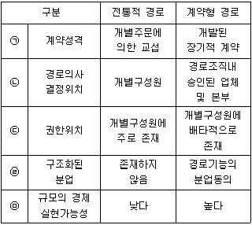
- ㉠
- ㉡
- ㉢
- ㉣
- ㉤
(정답률: 65%)
7. 물류와 고객서비스에 대한 내용으로 가장 옳지 않은 것은?
- 재고수준이 낮아지면 고객서비스가 좋아지므로 서비스 수준의 향상과 추가재고 보유비용의 관계가 적절한지 고려해야 한다.
- 주문을 받아 물품을 인도할 때까지의 시간을 리드타임이라고 한다면 리드타임은 수주, 주문처리, 물품준비, 발송, 인도시간으로 구성된다.
- 리드타임이 길면 구매자는 그 동안의 수요에 대비하기 위해 보유재고를 늘리게 되므로 구매자의 재고비용이 증가한다.
- 효율적 물류관리를 위해 비용과 서비스의 상충(trade-off)관계를 분석하고 최상의 물류서비스를 선택할 수 있어야 한다.
- 동등수준의 서비스를 제공할 수 있는 대안이 여럿 있을 때 그 중 비용이 최저인 것을 선택하는 것이 물류관리의 과제 중 하나이다.
(정답률: 69%)
8. 아웃소싱을 제공받는 기업이 얻을 수 있는 효과로 가장 옳지 않은 것은?
- 아웃소싱 파트너 통제가 자회사 통제보다 용이하다.
- 아웃소싱 파트너의 혁신과 신기술 개발의 혜택을 얻을 수 있다.
- 규모의 경제 효과를 기대할 수 있다.
- 아웃소싱을 통하여 고정비를 변동비로 전환시킬 수 있다.
- 분업의 원리를 이용하여 아웃소싱 파트너의 특화를 통해 이득을 얻을 수 있다.
(정답률: 75%)
9. 제품의 단위 당 가격이 4,000원이고, 제품의 단위 당 변동비가 2,000원 일 때, 이 회사의 손익 분기점은 몇 개일 때 인가? (단, 총 고정비는 200만원이다.)
- 100개
- 500개
- 1,000개
- 5,000개
- 10,000개
(정답률: 61%)
10. 레버리지 비율에 대한 설명으로 옳은 것을 모두 고르면?
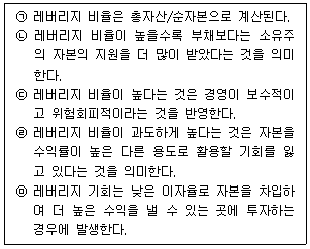
- ㉠
- ㉡, ㉢, ㉣
- ㉢, ㉣
- ㉠, ㉤
- ㉡, ㉢
(정답률: 47%)
11. 재무제표와 관련된 각종 회계정보에 대한 설명 중 가장 옳지 않은 것은?
- 재무상태표(구 대차대조표)를 통해 자산 중 자기자본이 얼마인지 확인할 수 있다.
- 포괄손익계산서를 통해 세금을 낸 이후의 순이익도 확인할 수 있다.
- 일정 기간 영업실적이 얼마인지 포괄손익계산서를 통해 알 수 있다.
- 자본변동표는 일정 시점에서 기업의 자본의 크기와 일정 기간 동안 자본 변동에 관한 정보를 나타낸다.
- 재무제표는 현금주의에 근거하여 작성하기 때문에 기업의 현금가용능력을 정확하게 파악할 수 있다.
(정답률: 64%)
12. 목표에 의한 관리(MBO) 이론에 대한 설명으로 가장 옳은 것은?
- 종업원은 다른 사람과 보상을 비교하여 노력과 보상간에 공정성을 유지하려 한다는 이론이다.
- 긍정적 또는 부정적 강화요인들이 사람들을 특정방식으로 행동하게 한다는 이론이다.
- 높지만 도달 가능한 목표를 제공하는 것이 종업원을 동기 부여할 수 있다는 이론이다.
- 종업원이 특정 작업에 투여하는 노력의 양은 기대하는 결과물에 따라 달라진다는 이론이다.
- 목표 설정 및 수행을 위한 장기계획을 수립할 수 있을 만큼 안정적인 기업에 더 적합한 이론이다.
(정답률: 54%)
13. 최고 경영자가 사원에 대해 지켜야 하는 기업윤리에 해당하는 것을 모두 고르면?
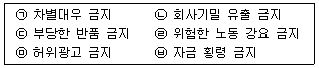
- ㉠, ㉡, ㉥
- ㉡, ㉥
- ㉠, ㉣
- ㉠, ㉡, ㉣, ㉥
- ㉢, ㉤
(정답률: 71%)
14. '전자상거래 등에서의 소비자보호에 관한 법률'(법률 제 15698호, 2018.6.12., 일부개정)에서 정의한 용어로 옳지 않은 것은?
- “전자상거래”란 전자거래(「전자문서 및 전자거래기본법」 제2조제5호에 따른 전자거래를 말한다)의 방법으로 상행위(商行爲)를 하는 것을 말한다.
- “통신판매”란 우편·전기통신, 그 밖에 총리령으로 정하는 방법으로 재화 또는 용역의 판매에 관한 정보를 제공하고 소비자의 청약을 받아 재화 또는 용역을 판매하는 것을 말한다.
- “통신판매업자”란 통신판매를 업(業)으로 하는 자 또는 그와의 약정에 따라 통신판매업무를 수행하는 자를 말한다.
- “거래중개”란 사이버몰의 이용을 허락하거나 그 밖에 대통령령으로 정하는 방법으로 거래 당사자 간의 통신판매를 알선하는 행위를 말한다.
- “사업자”란 물품을 제조(가공 또는 포장을 포함)·수입·판매하거나 용역을 제공하는 자를 말한다.
(정답률: 56%)
15. 아래 글 상자의 A가맹점에 의하여 발생한 유통경로 갈등의 원인은?
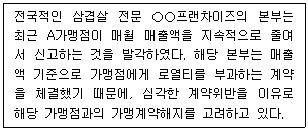
- 역할의 불일치
- 인식의 불일치
- 기회주의적 행동
- 영역의 불일치
- 목표의 불일치
(정답률: 66%)
16. 도매상의 제조업체에 대한 기능으로 옳지 않은 것은?
- 시장확대 기능
- 재고유지 기능
- 제품의 소량분할공급 기능
- 주문처리 기능
- 시장정보제공 기능
(정답률: 60%)
17. 유통경로구조의 결정이론과 설명하는 주요 내용의 연결로서 옳지 않은 것은?
- 연기-투기이론: 누가 재고보유에 따른 위험을 감수하는가?
- 기능위양이론: 누가 어떤 기능을 얼마나 효율적으로 수행하는가?
- 거래비용이론: 기업이 어떻게 유통경로구조의 수평적 통합을 통해 경로구성원들과의 시너지 효과를 창출하는가?
- 게임이론: 경쟁관계에 있는 구성원들이 어떻게 자신의 이익을 극대화하는가?
- 대리인이론: 의뢰인에게 최선의 성과를 가져다주는 효율적인 계약인가?
(정답률: 65%)
18. 종업원 훈련과 개발에 관한 내용으로 옳지 않은 것은?
- 훈련·개발 방법은 전문강사의 지도로 이루어지는 직장내훈련(on the job training: OJT)과 선임자에 의해 이루어지는 직장외훈련(off the job training: Off-JT)으로 구분된다.
- 강의와 세미나 방식은 종업원들로 하여금 필요한 지식을 습득하게 하고 자신의 개념적, 분석적 능력을 개발하는 기회를 제공한다.
- 도제훈련방식은 특히 숙련공을 필요로 하는 금속, 인쇄, 건축 같은 업종의 기업에서 하는 훈련방식으로 고도의 기술수준이 필요한 경우에 적합하다.
- 인턴제도는 수련훈련방식에 포함되는 것으로 졸업을 앞둔 대학생이 직무에 배치되어 배우면서 일하는 프로그램이다.
- 가상훈련장 훈련방식은 실제 작업환경과 비슷한 가상의 작업환경 속에서 직무를 학습하게 하는 훈련을 말한다.
(정답률: 73%)
19. 포장물류의 사회성에 따른 문제점과 고려할 사항으로 옳지 않은 것은?
- 소비자의 요구에 부합하여 과대포장이 되지 않도록 포장의 적정화를 기하여야 한다.
- 적절한 회수 및 폐기 시 환경문제를 고려하여 포장재를 선택하여야 한다.
- 포장재에 대한 특징, 사용상의 주의, 포장해체에 대한 절차를 정확하게 표기하여야 한다.
- 포장재료나 용기의 유해성과 위생성 등은 일차적으로 고려하지 않아도 된다.
- 포장재료의 주를 이루는 판지, 플라스틱, 금속 및 목재 등 상당수의 포장재는 자원절약과 효율적인 활용차원에서의 재활용을 고려하여야 한다.
(정답률: 87%)
20. 물적 흐름과정에 따라 분류한 영역별 물류비에 해당하지 않는 것은?
- 조달물류비
- 물류정보관리비
- 판매물류비
- 역물류비
- 사내물류비
(정답률: 61%)
21. 조직 내에서 발생할 수 있는 갈등에 대한 대응방식과 관련된 설명으로 옳지 않은 것은?
- 양보: 자신의 이해관계보다는 상대의 요구에 맞춰 갈등해결을 추구한다.
- 타협: 자신의 실익 및 상대와의 관계를 적절히 조화시키려 한다.
- 경쟁: 자신의 입장을 고수하기 위해 자신의 능력을 사용한다.
- 협력: 갈등에 대한 언급 자체를 피한다.
- 회피: 갈등상태에 있는 자신의 목표 달성을 추구하지 않는다.
(정답률: 82%)
22. ABC재고관리방법에 대해 옳게 기술한 것은?
- 정성적 예측기법을 활용한 재고관리방법이다.
- 마케팅 비용에 따른 수요예측을 근거로 경제적 주문량을 결정한다.
- A그룹에 포함되는 품목은 대체로 수익성이 낮은 품목이다.
- C그룹에 포함되는 품목은 단가가 낮아 재고관리가 소홀한 경우가 발생하기도 한다.
- 파레토 법칙과는 상반되는 재고관리방법이다.
(정답률: 58%)
23. 재고관리에 대해서 옳게 기술한 것을 모두 고르면?
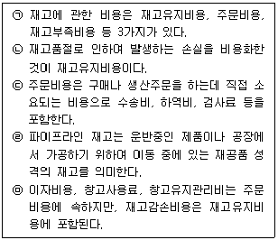
- ㉡, ㉢
- ㉢, ㉣
- ㉠, ㉡, ㉤
- ㉠, ㉢, ㉣
- ㉠, ㉢, ㉤
(정답률: 53%)
24. 물류 관리에서 배송 합리화의 방안으로 공동배송을 실시하려고 할 때 유의해야 할 사항과 가장 거리가 먼 것은?
- 제품이나 보관 특성상의 유사성이 있을 때 효과적이다.
- 거리가 인접하여 화물 수집이 용이해야 한다.
- 대상화물이 공동화에 적합한 특성을 가지고 있어야 한다.
- 일정 지역 내에 배송하는 화주가 독점적으로 존재해야 한다.
- 참여 기업의 배송조건이 유사해야 한다.
(정답률: 84%)
25. 소매상의 분류로 옳은 것을 모두 고르면?
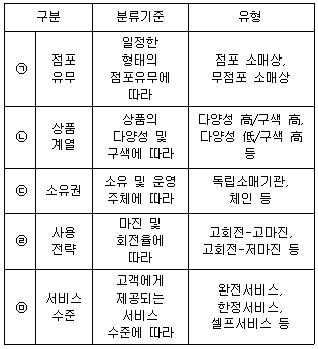
- ㉠
- ㉠, ㉡
- ㉠, ㉡, ㉢
- ㉠, ㉡, ㉢, ㉣
- ㉠, ㉡, ㉢, ㉣, ㉤
(정답률: 84%)
2과목: 상권분석
26. 구체적 상권분석 기법 중 하나로 유추법 등에서 활용되는 CST map은 유통기업의 CRM에서 소비자를 공간적으로 분석하는데 이용되기도 하는데 다음 중 이와 관련한 설명으로 적합하지 않은 것은?
- 최근 점점 더 활용도가 높아지고 있는 GIS의 다양한 분석기능들을 활용하면 2차원 또는 3차원의 공간데이터를 가공하여 상권과 관련한 의사결정에 도움을 줄 수 있다.
- 새롭게 개발하는 신규점포가 기존점포의 상권을 얼마나 잠식할 가능성이 있는가를 분석하여 점포 개설, 점포이동, 점포 확장계획을 만들 수 있다.
- 2차자료인 공공데이터를 활용해 점포 이용자 중 특정 속성을 가진 표적소비자들을 추출하고 그들만을 대상으로 하는 차별적 판촉전략을 수행할 수 있다.
- 자사 점포 및 경쟁사의 점포 위치와 각 점포별 상권범위 분석을 통해 점포들간의 상권잠식 상태와 경쟁정도를 측정할 수 있다.
- 점포를 이용하고 있는 현재의 소비자나 잠재적 소비자들의 공간적 위치를 분석하여 상권의 범위를 파악할 수 있으며, 1차상권, 2차상권 및 한계상권을 구획할 수 있다.
(정답률: 58%)
27. 점포의 입지유형을 집심성(集心性), 집재성(集在性), 산재성(散在性)으로 구분할 때 넬슨의 소매입지 선정원리 중에서 집재성 점포의 기본속성과 연관성이 가장 큰 것은?
- 양립성의 원리
- 경쟁위험 최소화의 원리
- 경제성의 원리
- 누적적 흡인력의 원리
- 고객 중간유인의 원리
(정답률: 58%)
28. 대표적 상권분석 기법 중 하나인 Huff모형과 관련된 설명으로 옳은 것은?
- 점포선택행동을 확률적분석이 아닌 기술적방법(descriptive method)으로 분석한다.
- Huff모형은 상권내의 매출액을 추정하지만 점포별 점유율은 추정하지 못한다.
- 소매상권이 공간상에서 연속적이고 타점포 상권과 중복가능함을 인정한다.
- 소비자 거주지와 점포까지의 거리는 이동시간으로 대체하여 분석할 수 없다.
- Huff모형은 점포이미지 등 다양한 변수를 반영하여 상권을 분석할 수 있다.
(정답률: 40%)
29. 지역상권의 매력도를 평가할 때는 먼저 수요요인과 공급요인을 고려해야 한다. 이 요인들을 평가하는데 소매포화지수(IRS: Index of Retail Saturation)와 시장성장잠재력지수(MEP: Market Expansion Potential)를 활용할 수 있다. 이 두 지수들을 기준으로 평가할 때 그 매력성이 가장 높은 지역상권은?
- IRS가 작고 MEP도 작은 지역상권
- IRS가 작고 MEP는 큰 지역상권
- IRS가 크고 MEP는 작은 지역상권
- IRS가 크고 MEP도 큰 지역상권
- IRS의 크기와는 상관없이 MEP가 큰 지역상권
(정답률: 74%)
30. 점포의 매력도를 평가하는 입지조건의 특성과 그에 대한 설명이 올바르게 연결된 것은?
- 가시성 – 얼마나 그 점포를 쉽게 찾아 올 수 있는가 또는 점포 진입이 수월한가를 의미
- 접근성 – 점포를 찾아오는 고객에게 점포의 위치를 쉽게 설명할 수 있는 설명의 용이도
- 홍보성 – 점포 전면을 오고 가는 고객들이 그 점포를 쉽게 발견할 수 있는지의 척도
- 인지성 – 사업 시작 후 고객에게 어떻게 유효하게 점포를 알릴 수 있는가를 의미
- 호환성 – 점포에 입점 가능한 업종의 다양성 정도 즉, 다양한 업종의 성공가능성을 의미
(정답률: 65%)
31. 지리정보시스템(GIS)의 활용으로 과학적 상권분석의 가능성이 높아지고 있는데 이와 관련한 설명으로 적합하지 않은 것은?
- 컴퓨터를 이용한 지도작성(mapping)체계와 데이터베이스관리체계(DBMS)의 결합이라고 볼 수 있다.
- GIS는 공간데이터의 수집, 생성, 저장, 검색, 분석, 표현 등 상권분석과 연관된 다양한 기능을 기반으로 한다.
- 대개 GIS는 하나의 데이터베이스와 결합된 하나의 지도레이어(map layer)만을 활용하므로 강력한 공간정보표현이 가능하다.
- 지도레이어는 점, 선, 면을 포함하는 개별 지도형상(map features)으로 주제도를 표현할 수 있다.
- gCRM이란 GIS와 CRM의 결합으로 지리정보시스템(GIS)기술을 활용한 고객관계관리(CRM) 기술을 가리킨다.
(정답률: 75%)
32. 점포의 경영성과에 영향을 미치는 다양한 입지조건에 대한 설명 중에서 일반적으로 타당하다고 볼 수 없는 것은?
- 시장규모에 따라 점포는 적정한 크기가 있어서 면적이 일정 수준을 넘게 되면 규모의 증가에도 불구하고 매출은 증가하지 않는 경향이 있다.
- 주로 대로변에서 발견되는 특정 점포의 건축선 후퇴는 자동차를 이용하는 소비자에게 가시성을 높여 매출에 긍정적 영향을 미친다.
- 도로에 접하는 점포의 정면너비가 건물 안쪽으로의 깊이보다 큰 장방형 형태의 점포는 가시성 확보에 유리해 바람직하다.
- 점포의 출입구에 높낮이 차이가 있으면 출입을 방해하는 장애물로 작용하게 된다.
- 점포의 형태가 직사각형에 가까우면 집기나 진열선반 등을 효율적으로 배치하기 쉽고 이용할 수 없는 공간(dead space)이 발생하지 않는다.
(정답률: 66%)
33. 아래 글상자에 열거된 사항들 가운데 입지 선정을 위한 상권의 경쟁구조 분석의 대상들만을 묶은 것은?
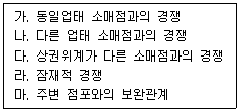
- 가, 나, 다, 라, 마
- 가, 나, 다, 라
- 가, 나, 다, 마
- 가, 나, 다
- 가, 나
(정답률: 70%)
34. 아래 글상자에 출점과 관련된 몇 가지 의사결정 사안들이 제시되어 있다. 다음 중 출점 의사결정 사안을 논리적과정에 따라 가장 올바르게 배열한 것은?
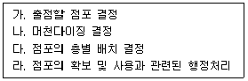
- 가(→)나(→)다(→)라
- 라(→)가(→)나(→)다
- 가(→)라(→)다(→)나
- 나(→)다(→)가(→)라
- 나(→)라(→)가(→)다
(정답률: 54%)
35. 점포와의 거리를 기준으로 상권구성을 구분할 때 1차상권, 2차상권, 3차상권으로 구분한다. 이에 대한 내용으로 옳지 않은 것은?
- 1차상권은 경쟁점포들과의 상권중복도가 낮다.
- 1차상권은 2, 3차 상권이 비해 상대적으로 내점고객의 밀도가 높다.
- 2차상권은 1차상권에 비해 소비자의 내점빈도가 낮다.
- 3차상권은 소비수요의 흡인비율이 가장 높은 지역이다.
- 3차상권은 한계상권이라고 부르기도 한다.
(정답률: 71%)
36. 상권분석에서 활용하는 조사기법 중에서 조사대상과 조사장소가 점두조사법과 가장 유사한 것은?
- 가정방문조사법
- 지역할당조사법
- 고객점표법
- 내점객조사법
- 편의추출조사법
(정답률: 54%)
37. 점포개설과정에서 점포의 매매와 임대차 거래 전에 반드시 확인해야 할 공부서류와 그 내용을 위쪽 괄호부터 순서대로 바르게 연결한 것은?
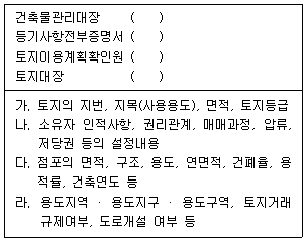
- 가 - 나 - 라 – 다
- 나 - 가 - 라 – 다
- 다 - 나 - 가 – 라
- 다 - 나 - 라 – 가
- 나 - 다 - 가 – 라
(정답률: 67%)
38. 점포임차시 임대차계약을 체결하는 과정에서 확인해야할 환산보증금에 대한 설명으로 옳지 않은 것은?
- 환산보증금은 상가건물임대차보호법에서 규정하고 있다.
- 상가건물임대차보호법은 영세상인을 보호하기 위해 제정된 보호법이다.
- 환산보증금 기준은 영세상인의 범위를 규정하기 위해 정한 보증금 수준을 의미한다.
- 우선변제를 받을 환산보증금의 기준은 지역별 차등적용에서 전국적으로 표준화된 동일기준으로 변경되었다.
- 경제발전 정도에 따라서 우선변제의 기준액이 변경될 수 있으므로 실제 거래가 일어나는 시기에 해당 법령조항을 확인해야 한다.
(정답률: 60%)
39. 좋은 입지의 선정은 소매점 성공의 핵심요인의 하나이다. 공간균배의 원리는 경쟁관계에 있는 점포들이 서로 공간을 나누어 사용하는 방식에 따라 입지와 점포의 적합성이 달라진다고 주장한다. 다음 중 점포유형별로 적합한 입지에 대한 공간균배원리의 설명에 부합하는 것은?
- 가구점은 도심입지가 유리한 집심성(集心性) 점포이다.
- 백화점은 서로 분산하여 입지하는 것이 유리한 산재성(散在性) 점포이다.
- 고급의류점은 동일업종 점포들이 국부적 중심지에 집중하는 것이 유리한 산재성(散在性) 점포이다.
- 대중목욕탕은 동일업종이 함께 모여 있는 입지가 유리한 집재성(集在性) 점포이다.
- 먹자골목이나 약재시장은 집재성 입지의 대표적 사례에 해당한다.
(정답률: 66%)
40. 상권들에 대한 점포의 출점 여부와 출점 순서를 결정할 때는 상권의 시장 매력성과 자사 경쟁력을 고려해야 한다. 시장 매력성은 시장의 규모와 성장성, 자사 경쟁력은 경쟁강도 및 자사 예상매출액 등을 결합하여 추정한다. 점포출점에 대한 다음의 원칙들 가운데 가장 옳지 않은 것은?
- 경우에 따라 자사 경쟁력보다 시장 매력성을 우선적으로 고려할 수도 있다.
- 경쟁 강도가 낮아도 자사 예상매출액 또한 낮으면 출점하지 않는 것이 바람직 하다.
- 무조건 큰 규모로 개점하여 경쟁력을 강화하기보다 적정규모로 출점한다.
- 시장 매력성은 큰 데 예상매출액이 작으면 경쟁력을 개선할 수 있을 때만 출점하는 것이 바람직 하다.
- 더 큰 시너지를 얻을 수 있으므로 자사 점포간 상권잠식은 오히려 유리한 현상이다.
(정답률: 70%)
41. 상권과 입지는 혼용되는 경우가 있지만 엄밀하게 보면 기본개념이나 성격 및 평가방법 등의 측면에서 구분할 수 있다. 이러한 구분을 시도하는 경우 그 연결이 적절한 것은?
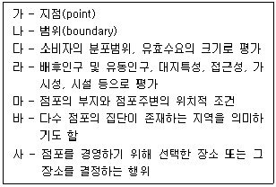
- 상권 – 나, 다, 사
- 상권 – 가, 바, 사
- 상권 – 나, 라, 바
- 입지 – 가, 라, 마
- 입지 – 나, 라, 사
(정답률: 47%)
42. 소매점에서 좋은 입지와 나쁜 입지의 일반적 특성에 대한 아래의 내용 중에서 가장 옳지 않은 것은?
- 출근길보다는 퇴근길 방향에 있는 곳은 좋은 입지이다.
- 주변 가게가 기술 위주 서비스업종이나 저가 상품 위주인 곳은 나쁜 입지이다.
- 주변에 노점상이 많은 입지는 좋은 입지이다.
- 버스정류장이나 지하철역을 끼고 있는 입지는 매우 좋은 입지이다.
- 일방(편도)통행 도로변이나 맞은편에 점포가 없는 곳은 좋은 입지이다.
(정답률: 49%)
43. 고객유도시설을 점포의 유형에 따라 도시형, 교외형, 인스토어형으로 구분할 때 도시형점포의 고객유도시설이라고 볼 수 없는 것은?
- 지하철역
- 철도역
- 버스정류장
- 버스터미널
- 인터체인지
(정답률: 74%)
44. 유동인구 조사를 통해 유리한 입지조건을 찾는 방안으로 옳지 않은 것은?
- 교통시설로부터의 쇼핑동선이나 생활동선을 파악한다.
- 주중 또는 주말 중 조사의 편의성을 감안하여 선택적으로 조사한다.
- 조사시간은 영업시간대를 고려하여 설정한다.
- 유동인구의 수보다 인구특성과 이동방향 및 목적 등이 더 중요할 수도 있다.
- 같은 수의 유동인구라면 일반적으로 출근동선보다 퇴근 동선에 위치하면 더 유리하다.
(정답률: 75%)
45. 21km의 거리를 두고 떨어져 있는 두 도시 A, B가 있는데 A시의 인구는 3만명이고 B시의 인구는 A시의 4배라고 하면 도시간의 상권경계는 A시로부터 얼마나 떨어진 곳에 형성되겠는가? Converse의 상권분기점 분석법을 이용해 계산하라.
- 5.25km
- 6km
- 7km
- 13km
- 14km
(정답률: 43%)
3과목: 유통마케팅
46. 아래 글상자에서 설명하는 이것은?
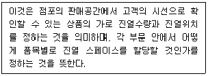
- 조닝(zoning)
- 페이싱(facing)
- 브레이크업(break up)
- 블랙룸(black room)
- 랙(rack)
(정답률: 52%)
47. 유통경로에 참여하는 구성원 간의 관계에서 작용하는 경로파워의 원천을 구분하여 설명할 때, (가)와 (나)에 들어갈 용어가 순서대로 옳게 나열된 것은?
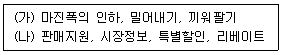
- 보상적 파워, 준거적 파워
- 강압적 파워, 보상적 파워
- 합법적 파워, 강압적 파워
- 준거적 파워, 전문적 파워
- 전문적 파워, 합법적 파워
(정답률: 77%)
48. 판매촉진의 목표와 판촉수단을 가장 옳게 연결한 것은?
- 시험구매 촉진-견본품 제공
- 재구매 촉진-시제품 제공
- 연속구입 촉진-시연회
- 시험구매 촉진-고객멤버십행사
- 재구매 촉진-시식 행사
(정답률: 72%)
49. 백화점 운영방식 유형을 거래조건, 재고부담, 소유권 등을 기준으로 구분할 때 설명이 옳지 않은 것은?
- 백화점 내 점포의 소유권이 백화점에 있으면 직영매장이고, 입점업체에 있으면 임대매장이다.
- 직매입 매장은 백화점이 제조업체나 벤더업체 등 납품업체로부터 상품을 매입하여 운영하는 매장이다.
- 특정매입매장을 운영하는 납품업체는 판매가 이루어 지지 않은 상품을 모두 재고로 떠안아야 하며 상품판매는 백화점의 명의로 이루어진다.
- 임대갑매장은 전형적인 임대차거래에 의한 매장으로백화점 입점 시 적정액의 임대보증금을 지급하고 임대료로 월정액의 임대료를 지급하는 매장이다.
- 직매입과 특정매입매장은 직영매장에 해당하고, 임대갑매장과 임대을매장은 임대매장으로 구분한다.
(정답률: 33%)
50. 가격전술과 내용이 가장 옳지 않은 것은?
- 유인가격전술: 보다 많은 소비자를 자사점포로 유인하기 위한 가격전술
- 변동가격전술: 가격을 동일하게 제시하는 것이 아니라 소비자와의 흥정을 통해 최종가격을 설정하는 가격전술
- 명성가격전술: 상품의 고품질과 높은 명성을 상징적으로 나타내기 위해 고가격을 설정하는 가격전술
- 묶음가격전술: 상품 단위당 이익을 높이기 위해 상품을 큰 묶음 단위로 제공하는 가격전술
- 가격대전술: 상품계열별로 취급상품들을 몇 종류의 가격대로 묶어 가격을 설정하는 전술
(정답률: 46%)
51. 아래 글상자 (가)와 (나)에 들어갈 용어가 순서대로 옳게 나열된 것은?
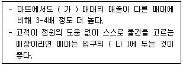
- (가) 중앙(center), (나) 왼쪽
- (가) 중앙(center), (나) 오른쪽
- (가) 엔드(end), (나) 양쪽
- (가) 엔드(end), (나) 오른쪽
- (가) 엔드(end), (나) 왼쪽
(정답률: 52%)
52. 마케팅 믹스전략에 대한 설명으로 가장 옳지 않은 것은?
- 소매상의 상품 전략은 표적 시장의 욕구를 충족시키기 위해 상품 믹스를 개발하고 관리하는 것이다.
- 대형 유통업체의 PB(Private Brand)출시는 상품 전략 중에서 상표 전략에 속한다.
- 가격 전략에서 특정 소매상이 시장 점유율을 증대시키고자 한다면 고가격전략을, 이익 증대가 목표라면 저가격 전략을 수립한다.
- 촉진이란 소비자가 특정 소매상이나 상품을 인지하고 구매하도록 유도하는 활동을 말한다.
- 광고와 인적판매, 판촉, 홍보는 대표적인 촉진 방법이다.
(정답률: 73%)
53. 경쟁의 유형에 대한 설명으로 옳게 짝지어진 것을 모두 고르면?
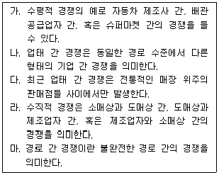
- 가, 나, 다
- 가, 나, 라
- 나, 다, 라
- 나, 다, 마
- 다, 라, 마
(정답률: 74%)
54. 아래 글상자의 사례에서, 전문컨설팅업체가 시행한 SWOT분석 내용 중 위협요인으로 잘못 분석한 것은?
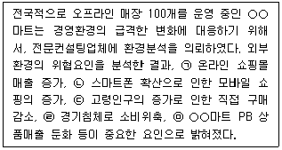
- ㉠
- ㉡
- ㉢
- ㉣
- ㉤
(정답률: 59%)
55. 소매업체의 상품구색계획(assortment plan)에 대한 설명으로 가장 옳은 것은?
- 소매업체의 전반적인 재무목표
- 상품 카테고리별 매입 절차 및 조직
- 상품의 점포별 할당 계획
- 특정 상품 카테고리에서 취급할 상품 목록
- 특정 상품 카테고리별 성과 통제
(정답률: 62%)
56. 아래 글상자 (가)와 (나)에 들어갈 용어가 순서대로 바르게 나열된 것은?
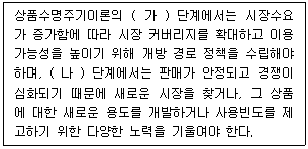
- (가) 도입기, (나) 쇠퇴기
- (가) 도입기, (나) 성숙기
- (가) 성장기, (나) 성숙기
- (가) 성장기, (나) 쇠퇴기
- (가) 성숙기, (나) 쇠퇴기
(정답률: 72%)
57. 아래 글상자의 사례에서 나타난 두 소비자의 구매행동을 기술하는 가장 적절한 용어는?
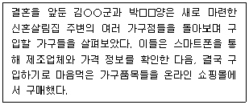
- 쇼루밍(showrooming)
- 역 쇼루밍(reverse showrooming)
- 웹루밍(webrooming)
- 윈도우 쇼핑(window shopping)
- 오프라인 쇼핑(offline shopping)
(정답률: 67%)
58. POP(Point of Purchase) 및 그 유형별 활용 방안에 대한 설명으로 가장 옳지 않은 것은?
- POP는 소비자가 구매하는 시점에서 판매를 촉진하는 수단으로서, 소비자에게 보다 직접적인 커뮤니케이션 메시지를 전할 수 있다는 장점이 있다.
- 광고 POP는 소비자를 유인하는 수단이 될 뿐만 아니라 광고를 상기시키는 역할을 한다.
- 광고 POP물은 사인(sign)물처럼 장기간 사용되기에 강렬한 인상을 줄수록 바람직하다.
- 판촉 POP의 메시지는 알기 쉽고 명확해야 하며, 디자인도 복잡하지 않아야 한다.
- 상품 POP는 헤드라인, 보디 카피, 그리고 그래픽으로 구성된다.
(정답률: 69%)
59. 서비스업체의 각 포지셔닝 전략 대안에 대한 예시가 옳지 않은 것은?
- 서비스 등급: 우리는 신속하게 고객을 도울 준비가 되어 있습니다.
- 서비스 이용자: 우리는 비즈니스 여행자를 위한 호텔입니다.
- 서비스 용도: 우리 헬스클럽은 다이어트 전문입니다.
- 경쟁자: 우리는 2위 편의점입니다. 1위가 되기 위해 최선을 다합니다.
- 공감성: 고객 한분 한분을 가족처럼 모시겠습니다.
(정답률: 63%)
60. 고객관계관리(CRM: Customer Relationship Management)에 대한 설명으로 가장 옳지 않은 것은?
- 기업의 입장에서 신규고객을 확보하기보다는 기존 고객을 유지하고 관리하는 것이 더 효율적이다.
- 고객 1인으로부터 창출될 수 있는 이익규모는 오래된 고객일수록 높다.
- CRM의 주된 목적은 고객에 대한 상세한 지식을 토대로 그들과의 장기적 관계를 구축하는 것이다.
- 고객생애가치(CLV: Customer Lifetime Value)란 한 고객이 고객으로 존재하는 전체 기간 동안 기업에게 제공하는 이익의 합을 의미한다.
- 고객이탈률이 낮을수록 고객생애가치는 감소한다.
(정답률: 75%)
61. 셀프서비스 매장의 구성 및 설계에 대한 설명으로 가장 옳지 않은 것은?
- 상품은 개방진열을 하는 것이 좋다.
- 상품의 앞면(face)을 고객이 볼 수 있도록 배열한다.
- 브랜드, 제조자, 가격 등의 정보가 상품 포장에 표시되어야 한다.
- 고객이 판매직원을 쉽게 찾을 수 있고 자유롭게 도움을 요청할 수 있도록 해야 한다.
- 고객이 편리하게 상품을 이동할 수 있는 쇼핑카트나 바구니가 비치되어 있어야 한다.
(정답률: 69%)
62. 상품기획 또는 상품화계획 등으로 불리는 머천다이징(merchandising)과 관련된 설명으로 옳지 않은 것은?
- 머천다이징의 성과를 평가하는 대표적 지표인 재고총이익률(GMROI)은 평균재고자산 대비 총마진을 의미한다.
- Merchandiser(MD)는 해당 카테고리에 소속되어 있는 소분류, 세분류, SKU(Stock Keeping Unit) 등을 관리한다.
- SKU는 가장 말단의 상품분류단위로 상품에 대한 추적과 관리가 용이하도록 사용하는 식별관리코드를 의미한다.
- SKU는 문자와 숫자 등의 기호로 표기되며 구매자나 판매자는 이 코드를 이용하여 특정한 상품을 지정할 수 있다.
- 일반적으로 SKU는 상품의 바코드에 표기되는 상품단위와 동일한 개념으로 사용되며 보통 유통업체에 의해 정해진다.
(정답률: 58%)
63. 수익성이 낮은 고객과의 거래를 축소하려는 도매업체의 고객응대 방식으로서 가장 옳은 것은?
- 품목별 판매촉진 확대
- 독점적인 상품라인의 취급
- 재고관리시스템 관리의 강화
- 소량 구매에 대해 주문처리비용 부과
- 소량 구매에 대한 배달비용 인하
(정답률: 74%)
64. 아래 글상자에서 설명된 진열방법으로 옳은 것은?
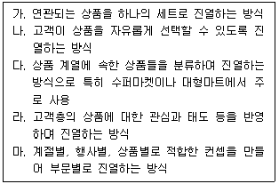
- 가 - 조정형 진열(coordinated display)
- 나 - 라이프 스타일형 진열(life-style display)
- 다 - 개방형 진열(open display)
- 라 - 주제별형 진열(theme display)
- 마 - 임의적 분류 진열(classification display)
(정답률: 33%)
65. 고객의 행동에 대처하는 판매자의 적합한 행동으로 보기 어려운 것은?
- 고객이 특정상품을 주시한다. → 재빠른 동작으로 다가가 주시한 상품의 특장점을 설명한다.
- 특정상품을 주목하고 만져본다. → 고객의 시선이나 동작을 주목하고 타이밍 좋게 어프로치 한다.
- 특정 상품의 가격표를 본다. → 제품을 갖고 싶은 욕망을 보이므로 소비상황 및 구매동기를 상기시켜 준다.
- 특정상품과 비슷한 다른 상품에 대해 질문한다. → 고객 욕망을 파악하고 셀링 포인트를 강조한다.
- 판매원에게 '이것 주세요' 한다. → 판매가 이루어지는 귀중한 시간이므로 판매가 끝날 때까지 그 분위기를 잘 이끌어간다.
(정답률: 43%)
66. 표본추출 유형에 대한 설명으로 옳지 않은 것은?
- 단순무작위표본추출법에서는 모집단의 모든 원소가 알려져 있고 선택될 확률이 똑같다.
- 층화표본추출방법은 모집단이 상호 배타적인 집단으로 나누어지며, 각 집단에서 무작위표본이 도출되는 방식이다.
- 편의표본추출방식은 조사자가 가장 얻기 쉬운 모집단 원소를 선정하는 방식이다.
- 판단표본추출방식은 조사자가 모집단을 상호 배타적인 몇 개의 집단으로 나누고 그 중에서 무작위로 추출하는 방식이다.
- 할당표본추출방식은 몇 개의 범주 각각에서 사전에 결정된 수 만큼의 표본을 추출하는 방식이다.
(정답률: 50%)
67. 경로 구성원의 성과평가기준과 성과척도의 연결이 옳지 않은 것은?
- 매출성과 - 총이익
- 매출성과 – 판매 할당량
- 판매 능력 – 전체 판매원 수
- 재고 유지 – 시장점유율
- 재고 유지 – 평균재고유지율
(정답률: 51%)
68. 신제품 출시 및 브랜드 개발에서 선택할 수 있는 전략과 그에 대한 설명으로 가장 옳지 않은 것은?
- 라인확장(line extention)은 제품범주 내에서 형태, 색상, 사이즈 등을 변형한 신제품에 대해 기존 브랜드명을 함께 사용하는 것이다.
- 브랜드확장(brand extention)은 기존의 브랜드명을 새로운 제품범주의 신제품으로 확장하는 것이다.
- 복수브랜딩(multibranding)은 다양한 소유 욕구를 가진 소비자들을 위해 동일 제품범주 내에 여러 개의 브랜드 제품을 도입하는 것이다.
- 공동브랜딩(co-branding)은 기존 브랜드명의 파워가 약해졌을 때 기존브랜드와 동일한 브랜드명의 신제품을 도입하는 것이다.
- 신규브랜드는 새로운 브랜드명을 도입하는 것으로 신제품에 사용될 적절한 기존 브랜드명이 없을 때 주로 선택한다.
(정답률: 59%)
69. 아래 글상자에서 설명하는 소매융합의 결과로 가장 옳은 것은?
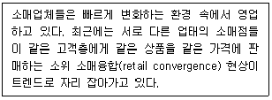
- 소매업태 간 차별화의 감소
- 소매업태 간 경쟁의 감소
- 소매업체별 판매의 증가
- 특정 소매업태 수익률의 상대적 증가
- 소매업체별 광고비의 감소
(정답률: 48%)
70. 프랜차이즈 시스템에서 가맹점(franchisee)이 되었을 때의 장점으로 옳지 않은 것은?
- 본부(franchisor)가 개발한 사업 상품 및 경영방식으로 인해 쉽게 사업을 시작할 수 있다.
- 지명도가 높은 상표명을 사용하므로 초기부터 소비자의 신뢰 확보가 가능하다.
- 본부가 일괄적으로 매장의 종업원을 채용하고 관리하므로 노사문제에 대한 우려가 낮다.
- 본부가 계속적으로 기존 제품을 개선하고 신제품을 개발해주므로 시장여건변화에 적절히 대응할 수 있다.
- 본부가 점포개설, 브랜드인지도제고, 지원시스템 구축 등에 많은 투자를 하기 때문에, 가맹점은 판매 활동에만 전념할 수 있다.
(정답률: 75%)
4과목: 유통정보
71. 아래 글상자의 괄호 안에 공통적으로 들어갈 알맞은 단어는?
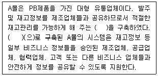
- 인트라넷
- 인터넷
- 통합프로토콜
- 엑스트라넷
- 이더넷
(정답률: 49%)
72. 카플란(Kaplan)과 노튼(Norton)이 제시한 균형성과표에 의한 성과측정 요소로 가장 거리가 먼 것은?
- 학습과 성장 관점
- 내부 비즈니스 프로세스 관점
- 전사적 자원관리 관점
- 재무적 관점
- 고객 관점
(정답률: 30%)
73. 괄호 안에 들어갈 알맞은 단어를 가장 적절하게 나열한 것은?
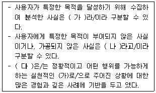
- 가: 자료, 나: 정보, 다: 시스템
- 가: 자료, 나: 정보, 다: 지식
- 가: 정보, 나: 자료, 다: 지식
- 가: 정보, 나: 지식, 다: 자료
- 가: 지식, 나: 자료, 다: 정보
(정답률: 50%)
74. 조직을 운영하면서 발생하는 거래 데이터를 신속, 정확하게 처리하는 거래처리시스템과 관련된 설명 중 가장 거리가 먼 것은?
- 일상적인 업무와 거래를 처리하기에 운영절차가 표준화되어 있다.
- 문제에 대해 효과적인 의사결정을 할 수 있도록 다양한 기능들을 제공한다.
- 다른 정보시스템에서 필요로 하는 원천 데이터를 제공한다.
- 상대적으로 짧은 시간에 많은 양의 데이터를 처리한다.
- 고객과 접점에서 발생하는 데이터를 관리하는 정보시스템이다.
(정답률: 32%)
75. 빅데이터 분석 특성에 대한 설명으로 가장 적합하지 않은 것은?
- 정보기술의 발전으로 실시간으로 다량의 데이터를 수집할 수 있다.
- 빅데이터 분석은 정형 데이터 분석은 가능하지만, 비정형 데이터에 대한 분석은 불가능하다.
- 빅데이터는 거대한 규모의 디지털 정보량을 확보하고 있다.
- 빅데이터 분석은 새로운 가치를 창출하기 위한 정보를 제공해 준다.
- 시계열적 특성을 갖고 있는 빅테이터는 추세 분석이 가능하다.
(정답률: 75%)
76. 노나카의 지식전환 프로세스인 'SECI모델'에 대한 설명으로 가장 옳지 않은 것은?
- 사회화는 암묵지에서 암묵지를 얻는 과정이다.
- 외재화는 암묵지에서 형식지를 얻는 과정이다.
- 공동화는 형식지에서 형식지를 얻는 과정이다.
- 내재화는 형식지에서 암묵지를 얻는 과정이다.
- 지식 변환과정은 직선적이 아닌 복합상승작용이 나타나는 나선형 프로세스로 진행된다.
(정답률: 42%)
77. 아래 글상자에서 설명하는 e-비즈니스 시스템 내에서 구현해야 할 보안 기능으로 가장 적합한 것은?
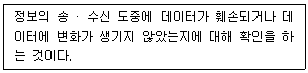
- 인증
- 기밀성
- 무결성
- 부인방지
- 전자서명
(정답률: 73%)
78. e-비즈니스의 특징으로 가장 적합하지 않은 것은?
- 생산자 파워의 증대를 들 수 있다.
- e-비즈니스는 인터넷을 기반으로 한다.
- 정보 공개를 통한 오픈 경영이 실시된다.
- 고객 데이터베이스를 기반으로 한 고객 맞춤 서비스가 가능해 진다.
- 모든 업무환경이 인터넷을 통해 이루어지므로 업무 통합현상이 나타난다.
(정답률: 59%)
79. 아래 글상자에서 설명하는 e-비즈니스 간접 수익창출방식으로 가장 적합한 것은?
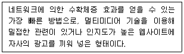
- 배너광고
- 스폰서십
- 무료메일 제공
- 제휴 프로그램
- 프로그램 무상 배포
(정답률: 77%)
80. RFID의 특징으로 가장 적합하지 않은 것은?
- 태그는 데이터를 저장하거나 읽어 낼 수 있어야 한다.
- 태그는 인식 방향에 관계없이 ID 및 정보 인식이 가능해야 한다.
- 태그는 직접 접촉을 하지 않아도 자료를 인식 할 수 있어야 한다.
- 태그는 바코드에 비해 적은 양의 데이터 만을 보내고, 받을 수 있어야 한다.
- 능동형 태그는 수동형 태그에 비해 일반적으로 데이터를 보다 멀리 전송할 수 있다.
(정답률: 67%)
81. TCP/IP 계층별 프로토콜(protocol)에 관한 설명 중에서 가장 옳지 않은 것은?
- UDP(User Datagram Protocol) : 사용자 데이터를 데이터그램(datagram)의 형태로 전송하기 위한 프로토콜
- ICMP(Internet Control Message Protocol) : IP 데이터그램의 전송중에 생기는 여러 예외사항에 관한 정보를 전송하기 위한 프로토콜
- IGMP(Internet Group Management Protocol) : 멀티캐스팅(multicasting)을 위한 프로토콜
- FTP(File Transfer Protocol) : 인터넷에서 원격컴퓨터와 파일을 송수신할 때 이용되는 프로토콜
- ARP(Address Resolution Protocol) : 하드웨어 주소를 IP 주소(address)로 매핑(mapping)하는 프로토콜
(정답률: 25%)
82. 파일의 데이터 계층구조를 순차적으로 나열한 것으로 가장 올바른 것은?
- 바이트(byte) → 비트(bit) → 필드(field) → 레코드(record) → 파일(file)
- 바이트(byte) → 비트(bit) → 레코드(record) → 필드(field) → 파일(file)
- 바이트(byte) → 필드(field) → 비트(bit) → 레코드(record) → 파일(file)
- 비트(bit) → 바이트(byte) → 레코드(record) → 필드(field) → 파일(file)
- 비트(bit) → 바이트(byte) → 필드(field) → 레코드(record) → 파일(file)
(정답률: 36%)
83. 사물인터넷(IoT) 시대의 특징을 인터넷 시대 및 모바일 시대와 비교하여 설명한 것으로 가장 거리가 먼 것은?
- IoT 시대는 사람과 사람, 사람과 사물, 사물과 사물간으로 연결범위가 확대되었다.
- 정보가 제공되는 서비스방식이 정보를 끌어당기는 풀(pull)방식에서 푸시(push)방식으로 전환되었다.
- 정보 제공 방식이 '24시간 서비스(Always-on)' 시대에서 '온디맨드(On-demand)' 방식으로 전환되었다.
- IoT 시대에서는 단순히 원하는 정보를 얻는 데 그치는 것이 아니라 정보를 조합해 필요한 지혜를 제공해 준다.
- 정보를 얻는 방식이 내가 원하는 무언가를 내가 찾는 것이 아니라, 내가 원하는 무언가를 주변에 있는 것들이 알아서 찾아주는 것이다.
(정답률: 46%)
84. e-CRM을 기업에서 성공적으로 도입하기 위해 필요한 발전 전략으로 가장 적합하지 않은 것은?
- 다양한 커뮤니케이션 수단을 활용하여 고객 접촉경로의 다양화가 필요하다.
- 소비자의 트렌드를 분석하기보다는 소비자의 유행을 따라가는 서비스를 구사하여야 한다.
- 고객의 입장에서 꼭 필요한 콘텐츠 구성이 필요하다.
- 개인의 특성에 맞게 맞춤 서비스로 타사와의 차별화 전략이 필요하다.
- 커뮤니티, 오락 등 콘텐츠의 다양화를 통한 활성화 전략이 필요하다.
(정답률: 75%)
85. 암묵지에 관한 설명으로 가장 옳지 않은 것은?
- 전수하기 어려운 지식
- 경험을 통해 체화된 지식
- 숙련된 기능 또는 노하우(know-how)
- 논리적 추론 및 계산에서 생기는 인식
- 말 또는 언어로 표현할 수 없는 주관적인 지식
(정답률: 70%)
86. 아래 글상자의 괄호 안에 들어갈 가장 적절한 용어는?
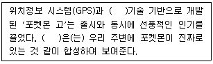
- 증강현실
- 머신러닝
- 모션임팩트
- 인공지능
- 딥러닝
(정답률: 76%)
87. 디지털(digital) 기술의 특성으로 가장 올바르지 않은 것은?
- 빛과 같은 속도로 이동하면서 정보를 전달할 수 있는 광속성
- 반복해서 사용해도 정보가 줄어들거나 질이 떨어지지 않는 무한 반복 재현성
- 정보를 다양한 형태로 가공하고 확대 재생산할 수 있는 용이성
- 송‧수신자가 동시에 서로 정보를 주고받을 수 있는 쌍방향성
- 메트칼프(Metcalfe)의 법칙이 적용되는 수확체감의 법칙성
(정답률: 70%)
88. 물류의 5대 기능에 대한 설명으로 가장 옳지 않은 것은?
- 포장기능은 내용물의 변형, 또는 변질을 막기 위한 본질적인 기능 및 판매 촉진 효과까지 수행한다.
- 하역기능은 물품의 운송과 보관 활동의 전후에 부수하여 행하는 물품의 반·출입 및 단거리 이동 작업을 의미한다.
- 보관기능은 물품을 물리적으로 보존하고 관리하는 것이다.
- 정보처리기능은 정보기술을 활용하여 효율적인 물류활동을 지원하도록 모든 영역의 정보 흐름을 유기적으로 적시에 제공함으로써 물류비용 절감 및 고객서비스 향상을 도모하는 것을 의미한다.
- 수주기능은 일반적으로 지역 간 또는 도시 간의 상품이동으로서, 지역 거점에서부터 소형 운송수단을 통해 소매점 또는 소형 고객에게 물품을 단거리 이동시키는 활동이다.
(정답률: 61%)
89. POS시스템의 도입으로 얻을 수 있는 국민경제 측면과 소비자에 대한 효과로 가장 옳지 않은 것은?
- 소비자는 신속하고 정확한 정산 및 상품구입으로 쇼핑시간을 절약할 수 있다.
- 품목별 시장규모의 파악으로 중복투자를 회피할 수 있다.
- 품목별 재고수준은 증가하나 전체 품목의 재고수준은 감소한다.
- 품절과 과잉재고 등의 조정으로 물가안정을 도모할 수 있다.
- 컴퓨터산업 및 정보산업 발전 등에 효과가 있다.
(정답률: 59%)
90. 지식인 또는 지식근로자에게 필요한 자질로 가장 적합하지 않은 것은?
- 자신의 일하는 방법을 부단히 개선ㆍ개발ㆍ혁신시켜야 한다.
- 자신이 터득한 노하우를 체계적으로 정리하고 기록해야 한다.
- 자신의 지식을 다른 사람과 자유롭게 공유할 수 있어야 한다.
- 희소 가치가 있는 지식이나 노하우는 암묵지 형태로 존재시켜야 한다.
- 일하는 방법을 개선ㆍ개발ㆍ혁신함으로써 얻은 아이디어는 구체적인 상품가치를 창출하는 데 연계시켜야 한다.
(정답률: 75%)